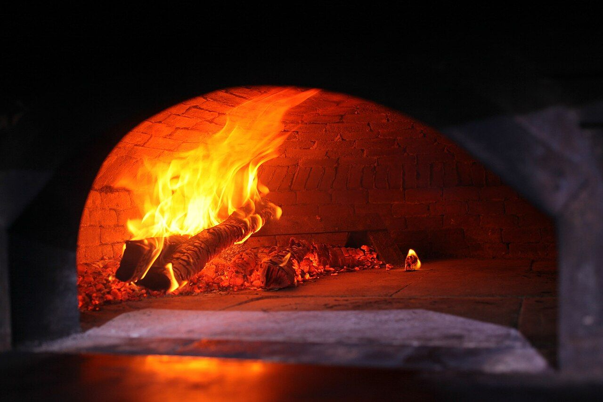

Boulangerie Komugi
こだわり
粉と水と、時間でつくります。
01 YEAST
天然酵母で、じっくり。

自家製の酵母で、ゆっくり発酵させます。小麦の甘みと、香ばしい皮が特長です。(見本の文章です)
02 OVEN
石窯で、焼く。

薪の火の遠赤外線で、中はしっとり、外は香ばしく焼き上げます。
03 DAILY
毎日、食べたいパン。

特別な日より、いつもの朝のために。毎日食べても飽きない、やさしい味をめざしています。
写真・店舗名・内容はすべて見本用の架空のものです
Boulangerie Komugi
粉と水と、時間でつくります。
01 YEAST
自家製の酵母で、ゆっくり発酵させます。小麦の甘みと、香ばしい皮が特長です。(見本の文章です)
02 OVEN

薪の火の遠赤外線で、中はしっとり、外は香ばしく焼き上げます。
03 DAILY
特別な日より、いつもの朝のために。毎日食べても飽きない、やさしい味をめざしています。